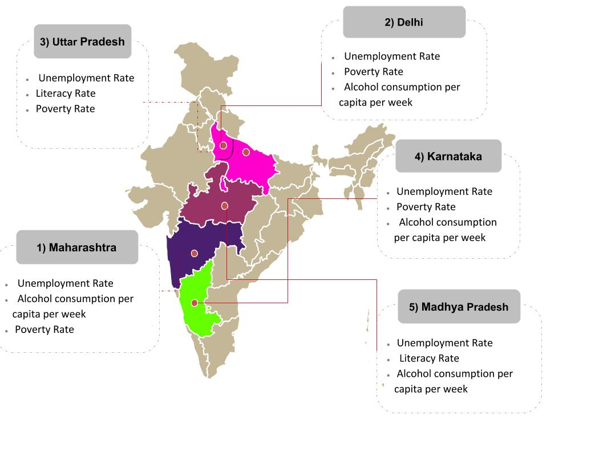

| MAP SHOWING HIGH DENSITY ZONES IN INDIA FOR ROBBERY CASES | LIST OF STATES ACCORDING TO ROBBERY REGISTERED CASES IN 2014 | ||
|  | 1> Maharashtra 24.86 % | 2> Delhi UT 16.98 % | 3> Uttar Pradesh 10.30 % |
| 4> Karnataka 6.61 % | 5> Madhya Pradesh 5.17 % | 6> Tamil Nadu 5.17 % | |
| 7> Odisha 4.80 % | 8> Bihar 4.20 % | 9> Rajasthan 3.42 % | |
| 10> Gujarat 3.18 % | 11> Assam 2.73 % | 12> Haryana 2.30 % | |
| 13> Kerala 2.28 % | 14> West Bengal 1.54 % | 15> Jharkhand 1.37 % | |
| 16> Andhra Pradesh 1.14 % | 17> Chhattisgarh 1.06 % | 18> Telangana 0.81 % | |
| 19> Punjab 0.41 % | 20> Uttarakhand 0.41 % | 21> Meghalaya 0.25 % | |
| 22> Jammu & Kashmir 0.23 % | 23> Chandigarh 0.17 % | 24> Arunachal Pradesh 0.16 % | |
| 25> Tripura 0.11 % | 26> Nagaland 0.10 % | 27> Goa 0.08 % | |
| 28> Himachal Pradesh 0.04 % | 29> Sikkim 0.03 % | 30> Manipur 0.02 % | |
| 31> Mizoram 0.02 % | 32> Puducherry 0.02 % | 33> Daman & Diu 0.01 % | |
| 34> A & N Islands 0.01 % | 35> D&N Haveli 0.01 % | 36> Lakshadweep 0.00 % | |